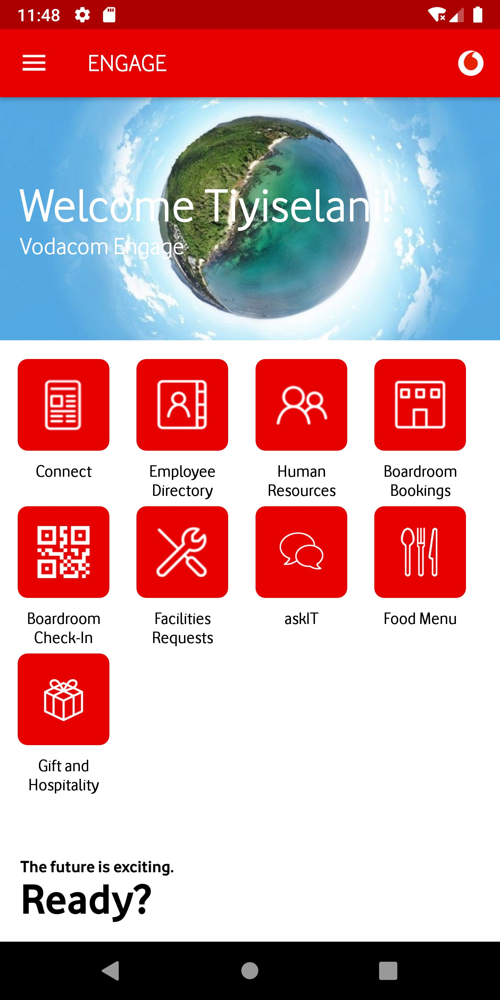
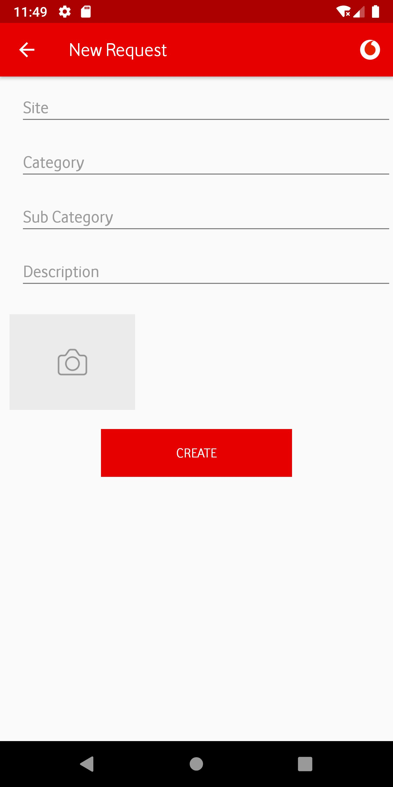

UX / UI DESIGN · ENTERPRISE EXPERIENCE
Making an employee app feel like a useful place to start.
A documented interface redesign for Vodacom Engage. I focused on turning a crowded employee home screen into a clearer entry point for everyday internal tasks.
01 · Frame
Start with the decision.
How can an employee quickly recognise the task they came to do, without navigating a wall of equal-priority options?
02 · Explore
Make the work visible.
The project evidence is shown as a small, inspectable gallery rather than decorative filler. Open an image to examine the interface direction.



03 · Decide
Turn insight into interface rules.
- Reduce the visual competition on the entry screen so the first action is easier to identify.
- Group related employee services into understandable categories rather than presenting every destination at once.
- Treat key tasks as flows, not isolated screens: entry, request and confirmation need to feel connected.
04 · Deliver
Design for the build.
A documented set of interface directions for the employee experience, including the home, HR and request views.
01Clear content hierarchy
02Responsive interface direction
03Reusable visual patterns
05 · Continue
What comes next.
Validate navigation labels with employees, instrument task starts and completions, and extend the patterns to remaining service areas.
Discuss a product challenge